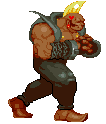
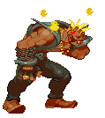

Birdie (Street Fighter)
Birdie (Street Fighter)
The term “mix-up” is used to describe the situation you put your opponent in by utilizing a mix of attacks (high/low, strike/throw) to force them to decide between the many methods of defense. All characters are able to do mix-up to an extent, these mix-up fighters, however, just specialize in this better. Unlike setplay fighters who puts opponents in mix-ups after a point of advantage, pure mix-up fighters are creating these situations at any time. Lots of their moves share a similar animation to each other when first executed. This forces the opponent to constantly guess their next attack. And if they guess wrong, the mix-up fighter can easily capitalize.
Toolkit
- Average health pool
- Moves that look similar with vastly different uses
- Strong mix-up potential
Pros

- Don’t require setup or knockdown
- Match-up experience advantage
- Constantly applying pressure
Cons
- Predictable if poorly executed
- Lacks defense
- Limited range
How should I play as this fighter?
Get to know your move set so you don’t get confused by the similar animations. Try to keep the distance close to the opponent to apply constant pressure and keep them guessing. Avoid letting them get away, since you are vulnerable to projectiles. Devise new and different combinations to avoid being predictable against more knowledgable players.
How can I beat this fighter?
Get better at defensive strategies to combat their mix-ups. If the pressure is too much, try to get out of the pocket and keep the distance since mix-ups lack long range attacks. Use your long range attacks or projectiles if possible.
Examples:
- Birdie (Street Fighter, 1987)
- Leroy Smith (Tekken 7: Fated Retribution, 2019)
- El Fuerte (Street Fighter IV, 2008)
Evelynn's Notes
Difficulty: ★ ★ ★ ★ ☆While mix-ups keep the opponent guessing, players need to know the character enough to think faster than the opponent in order to confuse them. Mix-ups can also become predictable to skilled players if there the player can’t devise a wide range of combinations. To do so requires more knowledge and understanding compared to other archetypes. The animations for the move set is very similar at times and tends to confuse newer players.